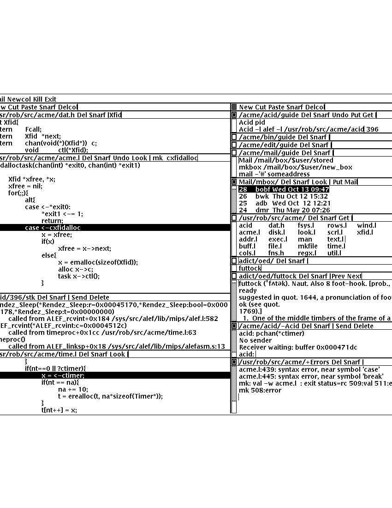

Acme: A User Interface for Programmers
Rob Pike
rob@plan9.bell-labs.com
ABSTRACT
A hybrid of window system, shell, and editor, Acme gives text-oriented
applications a clean, expressive, and consistent style of interaction.
Traditional window systems support interactive client programs and offer libraries of
pre-defined operations such as pop-up menus
and buttons to promote a consistent
user interface among the clients.
Acme instead provides its clients with a fixed user interface and
simple conventions to encourage its uniform use.
Clients access the facilities of Acme through a file system interface;
Acme is in part a file server that exports device-like files that may be
manipulated to access and control the contents of its windows.
Written in a concurrent programming language,
Acme is structured as a set of communicating processes that neatly subdivide
the various aspects of its tasks: display management, input, file server, and so on.
Acme attaches distinct functions to the three mouse buttons:
the left selects text;
the middle executes textual commands;
and the right combines context search and file opening
functions to integrate the various applications and files in
the system.
Acme works well enough to have developed
a community that uses it exclusively.
Although Acme discourages the traditional style of interaction
based on typescript windows—teletypes—its
users find Acme’s other services render
typescripts obsolete.
History and motivation
The usual typescript style of interaction with
Unix and its relatives is an old one.
The typescript—an intermingling of textual commands and their
output—originates with the scrolls of paper on teletypes.
The advent of windowed terminals has given each user what
amounts to an array of teletypes, a limited and unimaginative
use of the powers of bitmap displays and mice.
Systems like the Macintosh
that do involve the mouse as an integral part of the interaction
are geared towards general users, not experts, and certainly
not programmers.
Software developers, at least on time-sharing systems, have been left behind.
| | | | |
| | | | |
| |

Figure 1. A small Acme screen—normally it runs on a larger display—demonstrating
some of the details discussed in the text.
The right column contains some guide files,
a mailbox presented by Acme’s mail program,
the columnated display of files in Acme’s own source directory,
a couple of windows from the OED browser,
a debugger window,
and an error window showing diagnostics from a compilation.
The left column holds a couple of source files
(dat.h
and
acme.l),
another debugger window displaying a stack trace,
and a third source file
(time.l).
Time.l
was opened from the debugger by clicking the right mouse button
on a line in the stack window;
the mouse cursor landed on the offending line of
acme.l
after a click on the compiler message.
|
| |
| | | | |
| | | | |
Some programs have mouse-based editing of
text files and typescripts;
ones I have built include
the window systems
mux
[Pike88]
and
8½
[Pike91]
and the text editor
Sam [Pike87].
These have put the programmer’s mouse to some productive work,
but not wholeheartedly. Even experienced users of these programs
often retype text that could be grabbed with the mouse,
partly because the menu-driven interface is imperfect
and partly because the various pieces are not well enough integrated.
Other programs—EMACS [Stal93] is the prime example—offer a high
degree of integration but with a user interface built around the
ideas of cursor-addressed terminals that date from the 1970’s.
They are still keyboard-intensive and
dauntingly complex.
The most ambitious attempt to face these issues was the Cedar
system, developed at Xerox [Swei86].
It combined a new programming language, compilers,
window system, even microcode—a complete system—to
construct a productive, highly
integrated and interactive environment
for experienced users of compiled languages.
Although successful internally, the system was so large
and so tied to specific hardware that it never fledged.
Cedar was, however, the major inspiration for Oberon [Wirt89],
a system of similar scope but much smaller scale.
Through careful selection of Cedar’s ideas, Oberon shows
that its lessons can be applied to a small, coherent system
that can run efficiently on modest hardware.
In fact, Oberon probably
errs too far towards simplicity: a single-process system
with weak networking, it seems an architectural throwback.
Acme is a new program,
a combined window system, editor, and shell,
that applies
some of the ideas distilled by Oberon.
Where Oberon uses objects and modules within a programming language (also called Oberon),
Acme uses files and commands within an existing operating system (Plan 9).
Unlike Oberon, Acme does not yet have support for graphical output, just text.
At least for now, the work on Acme has concentrated on
producing the smoothest user interface possible for a programmer
at work.
The rest of this paper describes Acme’s interface,
explains how programs can access it,
compares it to existing systems,
and finally presents some unusual aspects of its implementation.
User interface
| | | | |
| | | | |
| |

Figure 2. An Acme window showing a section of code.
The upper line of text is the tag containing the file name,
relevant commands, and a scratch area (right of the vertical bar);
the lower portion of the window is the
body, or contents, of the file.
Here the scratch area contains a command for the middle button
(mk)
and a word to search for with the right button
(cxfidalloc).
The user has just
clicked the right button on
cxfidalloc
and Acme has searched for the word, highlighted it,
and moved the mouse cursor there. The file has been modified:
the center of the layout box is black and the command
Put
appears in the tag.
|
| |
| | | | |
| | | | |
Acme windows are arrayed in columns (Figure 1) and are used more
dynamically than in an environment like X Windows or
8½
[Sche86, Pike91].
The system frequently creates them automatically and the user
can order a new one with a single mouse button click.
The initial placement of a new window is determined
automatically, but the user may move an existing window anywhere
by clicking or dragging a
layout box
in the upper left corner of
the window.
Acme windows have two parts: a
tag
holding a single line of text,
above a
body
holding zero or more lines (Figure 2).
The body typically contains an image of a file being edited
or the editable output of a
program, analogous to an
EMACS shell
window. The tag contains
the name of the window
(usually the name of the associated
file or directory), some built-in commands, and a scratch area to hold arbitrary text.
If a window represents a directory, the name in the tag ends with
a slash and the body contains a list of the names of the files
in the directory.
Finally, each non-empty body holds a scroll bar at the left of the text.
Each column of windows also has a layout box and a tag.
The tag has no special meaning, although Acme pre-loads it with a few
built-in commands.
There is also a tag across the whole display, also loaded with
helpful commands and a list of active processes started
by Acme.
Typing with the keyboard and selecting with the left button are as in
many other systems, including the Macintosh,
8½,
and Sam.
The middle and right buttons are used, somewhat like the left button,
to ‘sweep’ text, but the indicated text is treated in a way
that depends on the text’s location—context—as well as its content.
This context, based on the directory of the file containing the text,
is a central component of Acme’s style of interaction.
Acme has no single notion of ‘current directory’.
Instead, every command, file name,
action, and so on is interpreted or executed in the directory named by the
tag of the window containing the command. For example, the string
mammals
in a window labeled
/lib/
or
/lib/insects
will be interpreted as the file name
/lib/mammals
if such a file exists.
Throughout Acme, the middle mouse button is used to execute commands
and the right mouse button is used to locate and select files and text.
Even when there are no true files on which to operate—for example
when editing mail messages—Acme and its applications use
consistent extensions of these basic functions.
This idea is as vital to Acme as icons are to the Macintosh.
The middle button executes commands: text swept with the button
pressed is underlined; when the button is released, the underline is
removed and the indicated text is executed.
A modest number of commands are recognized as built-ins: words like
Cut,
Paste,
and
New
name
functions performed directly by Acme.
These words often appear in tags to make them always available,
but the tags are not menus: any text anywhere in Acme may be a command.
For example, in the tag or body of any window one may type
Cut,
select it with the left button, use the middle button to execute it,
and watch it disappear again.
If the middle button indicates a command that is not recognized as a built-in,
it is executed in the directory
named by the tag of the window holding the text.
Also, the file to be executed is searched for first in that directory.
Standard input is connected to
/dev/null,
but standard and error outputs are connected to an Acme window,
created if needed, called
dir/+Errors where
dir
is the directory of the window.
(Programs that need interactive input use a different interface, described below.)
A typical use of this is to type
mk
(Plan 9’s
make)
in the scratch area in the tag of a C source window, say
/sys/src/cmd/sam/regexp.c,
and execute it.
Output, including compiler errors, appears in the window labeled
/sys/src/cmd/sam/+Errors,
so file names in the output are associated with the windows and directory
holding the source.
The
mk
command remains in the tag, serving as a sort of menu item for the associated
window.
Like the middle button, the right button is used to indicate text by sweeping it out.
The indicated text is not a command, however, but the argument of a generalized
search operator.
If the text, perhaps after appending it to the directory of the window containing it,
is the name of an existing file, Acme creates a new window to hold the file
and reads it in. It then moves the mouse cursor to that window. If the file is
already loaded into Acme, the mouse motion happens but no new window is made.
For example, indicating the string
sam.h
in
#include "sam.h"
in a window on the file
/sys/src/cmd/sam/regexp.c
will open the file
/sys/src/cmd/sam/sam.h.
If the file name is followed immediately by a colon and a legal address in
Sam notation (for example a line number or a regular expression delimited in
slashes or a comma-separated compound of such addresses), Acme highlights
the target of that address in the file and places the mouse there. One may jump to
line 27 of
dat.h
by indicating with the right button the text
dat.h:27.
If the file is not already open, Acme loads it.
If the file name is null, for example if the indicated string is
:/^main/,
the file is assumed to be that of the window containing the string.
Such strings, when typed and evaluated in the tag of a window, amount to
context searches.
If the indicated text is not the name of an existing file, it is taken to be literal
text and is searched for in the body of the window containing the text, highlighting
the result as if it were the result of a context search.
For the rare occasion when a file name
is
just text to search for, it can be selected with the left button and used as the
argument to a built-in
Look
command that always searches for literal text.
Nuances and heuristics
A user interface should not only provide the necessary functions, it should also
feel
right.
In fact, it should almost not be felt at all; when one notices a
user interface, one is distracted from the job at hand [Pike88].
To approach this invisibility, some of Acme’s properties and features
are there just to make the others easy to use.
Many are based on a fundamental principle of good design:
let the machine do the work.
Acme tries to avoid needless clicking and typing.
There is no ‘click-to-type’, eliminating a button click.
There are no pop-up or pull-down menus, eliminating the mouse action needed to
make a menu appear.
The overall design is intended to make text on the screen useful without
copying or retyping; the ways in which this happens involve
the combination of many aspects of the interface.
Acme tiles its windows and places them automatically
to avoid asking the user to place and arrange them.
For this policy to succeed, the automatic placement must behave well enough
that the user is usually content with the location of a new window.
The system will never get it right all the time, but in practice most
windows are used at least for a while where Acme first places them.
There have been several complete rewrites of the
heuristics for placing a new window,
and with each rewrite the system became
noticeably more comfortable. The rules are as follows, although
they are still subject to improvement.
The window appears in the ‘active’ column, that most recently used for typing or
selecting.
Executing and searching do not affect the choice of active column,
so windows of commands and such do not draw new windows towards them,
but rather let them form near the targets of their actions.
Output (error) windows always appear towards the right, away from
edited text, which is typically kept towards the left.
Within the column, several competing desires are balanced to decide where
and how large the window should be:
large blank spaces should be consumed;
existing text should remain visible;
existing large windows should be divided before small ones;
and the window should appear near the one containing the action that caused
its creation.
Acme binds some actions to chords of mouse buttons.
These include
Cut
and
Paste
so these common operations can be done without
moving the mouse.
Another is a way to apply a command in one window to text (often a file name)
in another, avoiding the actions needed to assemble the command textually.
Another way Acme avoids the need to move the mouse is instead to move the cursor
to where it is likely to be used next. When a new window is made, Acme
moves the cursor to the new window; in fact, to the selected text in that window.
When the user deletes a newly made window, the cursor is
returned to the point it was before the window was made,
reducing the irritation of windows that pop up to report annoying errors.
When a window is moved, Acme moves the cursor to the layout box in
its new place, to permit further adjustment without moving the mouse.
For example, when a click of the left mouse button on the layout box grows
the window, the cursor moves to the new location of the box so repeated clicks,
without moving the mouse, continue to grow it.
Another form of assistance the system can offer is to supply precision in
pointing the mouse. The best-known form of this is ‘double-clicking’ to
select a word rather than carefully sweeping out the entire word.
Acme provides this feature, using context to decide whether to select
a word, line, quoted string, parenthesized expression, and so on.
But Acme takes the idea much further by applying it to execution
and searching.
A
single
click, that is, a null selection, with either the middle or right buttons,
is expanded automatically to indicate the appropriate text containing
the click. What is appropriate depends on the context.
For example, to execute a single-word command
such as
Cut,
it is not necessary to sweep the entire word; just clicking the button once with
the mouse pointing at the word is sufficient. ‘Word’
means the largest string of likely file name characters surrounding the location
of the click: click on a file name, run that program.
On the right button, the rules are more complicated because
the target of the click might be a file name, file name with address,
or just plain text. Acme examines the text near the click to find
a likely file name;
if it finds one, it checks that it names an existing file (in the directory named in the tag, if the name is relative)
and if so, takes that as the result, after extending it with any address
that may be present. If there is no file with that name, Acme
just takes the largest alphanumeric string under the click.
The effect is a natural overloading of the button to refer to plain text as
well as file names.
First, though, if the click occurs over the left-button-selected text in the window,
that text is taken to be what is selected.
This makes it easy to skip through the occurrences of a string in a file: just click
the right button
on some occurrence of the text in the window (perhaps after typing it in the tag)
and click once for each subsequent occurrence. It isn’t even necessary to move
the mouse between clicks; Acme does that.
To turn a complicated command into a sort of menu item, select it:
thereafter, clicking the middle button on it will execute the full command.
As an extra feature, Acme recognizes file names in angle brackets
<>
as names of files in standard directories of include files,
making it possible for instance to look at
<stdio.h>
with a single click.
Here’s an example to demonstrate how the actions and defaults work together.
Assume
/sys/src/cmd/sam/regexp.c
is
open and has been edited. We write it (execute
Put
in the tag; once the file is written, Acme removes the word from the tag)
and type
mk
in the tag. We execute
mk
and get some errors, which appear in a new window labeled
/sys/src/cmd/sam/+Errors.
The cursor moves automatically to that window.
Say the error is
main.c:112: incompatible types on assignment to ‘pattern’
We move the mouse slightly and click the right button
at the left of the error message; Acme
makes a new window, reads
/sys/src/cmd/main.c
into it, selects line 112
and places the mouse there, right on the offending line.
Coupling to existing programs
Acme’s syntax for file names and addresses makes it easy for other programs
to connect automatically to Acme’s capabilities. For example, the output of
grep -n variable *.[ch]
can be used to help Acme step through the occurrences of a variable in a program;
every line of output is potentially a command to open a file.
The file names need not be absolute, either: the output
appears in a window labeled with the directory in which
grep
was run, from which Acme can derive the full path names.
When necessary, we have changed the output of some programs,
such as compiler error messages, to match
Acme’s syntax.
Some might argue that it shouldn’t be necessary to change old programs,
but sometimes programs need to be updated when systems change,
and consistent output benefits people as well as programs.
A historical example is the retrofitting of standard error output to the
early Unix programs when pipes were invented.
Another change was to record full path names in
the symbol table of executables, so line numbers reported by the debugger
are absolute names that may be used directly by Acme; it’s not necessary
to run the debugger in the source directory. (This aids debugging
even without Acme.)
A related change was to add lines of the form
#pragma src "/sys/src/libregexp"
to header files; coupled with Acme’s ability to locate a header file,
this provides a fast, keyboardless way to get the source associated with a library.
Finally, Acme directs the standard output of programs it runs to
windows labeled by the directory in which the program is run.
Acme’s splitting of the
output into directory-labeled windows is a small feature that has a major effect:
local file names printed by programs can be interpreted directly by Acme.
By indirectly coupling the output of programs to the input,
it also simplifies the management of software that occupies multiple
directories.
Coupling to new programs
Like many Plan 9 programs,
Acme offers a programmable interface to
other programs by acting as a file server.
The best example of such a file server is the window system
8½
[Pike91],
which exports files with names such as
screen,
cons,
and
mouse
through which applications may access the I/O capabilities of the windows.
8½
provides a
distinct
set of files for each window and builds a private file name space
for the clients running ‘in’ each window;
clients in separate windows see distinct files with the same names
(for example
/dev/mouse).
Acme, like the process file system [PPTTW93], instead associates each
window with a directory of files; the files of each window are visible
to any application.
This difference reflects a difference in how the systems are used:
8½
tells a client what keyboard and mouse activity has happened in its window;
Acme tells a client what changes that activity wrought on any window it asks about.
Putting it another way,
8½
enables the construction of interactive applications;
Acme provides the interaction for applications.
The root of
Acme’s file system is mounted using Plan 9 operations on the directory
/mnt/acme.
In
that root directory appears a directory for each window, numbered with the window’s identifier,
analogous to a process identifier, for example
/mnt/acme/27.
The window’s directory
contains 6 files:
/mnt/acme/27/addr,
body,
ctl,
data,
event,
and
tag.
The
body
and
tag
files contain the text of the respective parts of the window; they may be
read to recover the contents. Data written to these files is appended to the text;
seeks
are ignored.
The
addr
and
data
files provide random access to the contents of the body.
The
addr
file is written to set a character position within the body; the
data
file may then be read to recover the contents at that position,
or written to change them.
(The tag is assumed
small and special-purpose enough not to need special treatment.
Also,
addr
indexes by character position, which is not the same as byte offset
in Plan 9’s multi-byte character set [Pike93]).
The format accepted by the
addr
file is exactly the syntax of addresses within the user interface,
permitting regular expressions, line numbers, and compound addresses
to be specified. For example, to replace the contents of lines 3 through 7,
write the text
3,7
to the
addr
file, then write the replacement text to the
data
file. A zero-length write deletes the addressed text; further writes extend the replacement.
The control file,
ctl,
may be written with commands to effect actions on the window; for example
the command
name /adm/users
sets the name in the tag of the window to
/adm/users.
Other commands allow deleting the window, writing it to a file, and so on.
Reading the
ctl
file recovers a fixed-format string containing 5 textual numbers—the window
identifier, the number of characters in the tag, the number in the body,
and some status information—followed by the text of the tag, up to a newline.
The last file,
event,
is the most unusual.
A program reading a window’s
event
file is notified of all changes to the text of the window, and
is asked to interpret all middle- and right-button actions.
The data passed to the program is fixed-format and reports
the source of the action (keyboard, mouse, external program, etc.),
its location (what was pointed at or modified), and its nature (change,
search, execution, etc.).
This message, for example,
MI15 19 0 4 time
reports that actions of the mouse
(M)
inserted in the body (capital
I)
the 4 characters of
time
at character positions 15 through 19; the zero is a flag word.
Programs may apply their own interpretations of searching and
execution, or may simply reflect the events back to Acme,
by writing them back to the
event
file, to have the default interpretation applied.
Some examples of these ideas in action are presented below.
Notice that changes to the window are reported
after the fact; the program is told about them but is not required to act
on them. Compare this to a more traditional interface in which a program
is told, for example, that a character has been typed on the keyboard and
must then display and interpret it.
Acme’s style stems from the basic model of the system, in which any
number of agents—the keyboard, mouse, external programs
writing to
data
or
body,
and so on—may
change the contents of a window.
The style is efficient: many programs are content
to have Acme do most of the work and act only when the editing is completed.
An example is the Acme mail program, which can ignore the changes
made to a message being composed
and just read its body when asked to send it.
A disadvantage is that some traditional ways of working are impossible.
For example, there is no way ‘to turn off echo’: characters appear on the
screen and are read from there; no agent or buffer stands between
the keyboard and the display.
There are a couple of other files made available by Acme in its root directory
rather than in the directory of each window.
The text file
/mnt/acme/index
holds a list of all window names and numerical identifiers,
somewhat analogous to the output of the
ps
command for processes.
The most important, though, is
/mnt/acme/new,
a directory that makes new windows, similar to the
clone
directory in the Plan 9 network devices [Pres93].
The act of opening any file in
new
creates a new Acme window; thus the shell command
grep -n var *.c > /mnt/acme/new/body
places its output in the body of a fresh window.
More sophisticated applications may open
new/ctl,
read it to discover the new window’s identifier, and then
open the window’s other files in the numbered directory.
Acme-specific programs
Although Acme is in part an attempt to move beyond typescripts,
they will probably always have utility.
The first program written for Acme was therefore one
to run a shell or other traditional interactive application
in a window, the Acme analog of
xterm.
This program,
win,
has a simple structure:
it acts as a two-way intermediary between Acme and the shell,
cross-connecting the standard input and output of the shell to the
text of the window.
The style of interaction is modeled after
mux
[Pike88]: standard output is added to the window at the
output point;
text typed after the output point
is made available on standard input when a newline is typed.
After either of these actions, the output point is advanced.
This is different from the working of a regular terminal,
permitting cut-and-paste editing of an input line until the newline is typed.
Arbitrary editing may be done to any text in the window.
The implementation of
win,
using the
event,
addr,
and
data
files, is straightforward.
Win
needs no code for handling the keyboard and mouse; it just monitors the
contents of the window. Nonetheless, it allows Acme’s full editing to be
applied to shell commands.
The division of labor between
win
and
Acme
contrasted with
xterm
and the X server demonstrates how much work Acme handles automatically.
Win
is implemented by a single source file 560 lines long and has no graphics code.
Win
uses the middle and right buttons to connect itself in a consistent way
with the rest of Acme.
The middle button still executes commands, but in a style more suited
to typescripts. Text selected with the middle button is treated as if
it had been typed after the output point, much as a similar feature in
xterm
or
8½,
and therefore causes it to be ‘executed’ by the application running in the window.
Right button actions are reflected back to Acme but refer to the appropriate
files because
win
places the name of the current directory in the tag of the window.
If the shell is running, a simple shell function replacing the
cd
command can maintain the tag as the shell navigates the file system.
This means, for example, that a right button click on a file mentioned in an
ls
listing opens the file within Acme.
Another Acme-specific program is a mail reader that begins by presenting,
in a window, a listing of the messages in the user’s mailbox, one per line.
Here the middle and right button actions are modified to refer to
mail commands
and messages, but the change feels natural.
Clicking the right button on a line creates a new window and displays the
message there, or, if it’s already displayed, moves the mouse to that window.
The metaphor is that the mailbox is a directory whose constituent files are messages.
The mail program also places some relevant commands in the tag lines of
the windows; for example, executing the word
Reply
in a message’s tag creates a new window
in which to compose a message to the sender of the original;
Post
then dispatches it.
In such windows, the addressee is just a list of names
on the first line of the body, which may be edited to add or change recipients.
The program also monitors the mailbox, updating the ‘directory’ as new messages
arrive.
The mail program is as simple as it sounds; all the work of interaction,
editing, and management of the display is done by Acme.
The only
difficult sections of the 1200
lines of code concern honoring the external protocols for managing
the mailbox and connecting to
sendmail.
One of the things Acme does not provide directly is a facility like
Sam’s command language to enable actions such as global substitution;
within Acme, all editing is done manually.
It is easy, though, to write external programs for such tasks.
In this, Acme comes closer to the original intent of Oberon:
a directory,
/acme/edit,
contains a set of tools for repetitive editing and a template
or ‘guide’ file that gives examples
of its use.
Acme’s editing guide,
/acme/edit/guide,
looks like this:
e file | x ’/regexp/’ | c ’replacement’
e file:’0,$’ | x ’/.*word.*\n/’ | p -n
e file | pipe command args ...
The syntax is reminiscent of Sam’s command language, but here the individual
one-letter commands are all stand-alone programs connected by pipes.
Passed along the pipes are addresses, analogous to structural expressions
in Sam terminology.
The
e
command, unlike that of Sam, starts the process by generating the address
(default dot, the highlighted selection) in the named files.
The other commands are as in Sam:
p
prints the addressed text on standard output (the
-n
option is analogous to that of
grep,
useful in combination with the right mouse button);
x
matches a regular expression to the addressed (incoming) text,
subdividing the text;
c
replaces the text; and so on. Thus, global substitution throughout a file,
which would be expressed in Sam as
0,$ x/regexp/ c/replacement/
in Acme’s editor becomes
e ’file:0,$’ | x ’/regexp/’ | c ’replacement’
To use the Acme editing commands, open
/acme/edit/guide,
use the mouse and keyboard to edit one of the commands to the right form,
and execute it with the middle button.
Acme’s context rules find the appropriate binaries in
/acme/edit
rather than
/bin;
the effect is to turn
/acme/edit
into a toolbox containing tools and instructions (the guide file) for their use.
In fact, the source for these tools is also there, in the directory
/acme/edit/src.
This setup allows some control of the file name space for binary programs;
not only does it group related programs, it permits the use of common
names for uncommon jobs. For example, the single-letter names would
be unwise in a directory in everyone’s search path; here they are only
visible when running editing commands.
In Oberon,
such a collection would be called a
tool
and would consist
of a set of entry points in a module and a menu-like piece of text containing
representative commands that may be edited to suit and executed.
There is, in fact, a tool called
Edit
in Oberon.
To provide related functionality,
Acme exploits the directory and file structure of the underlying
system, rather than the module structure of the language;
this fits well with Plan 9’s
file-oriented philosophy.
Such tools are central to the working of Oberon but they are
less used in Acme, at least so far.
The main reason is probably that Acme’s program interface permits
an external program to remain executing in the background, providing
its own commands as needed (for example, the
Reply
command in the mail program); Oberon uses tools to
implement such services because its must invoke
a fresh program for each command.
Also,
Acme’s better integration allows more
basic functions to be handled internally; the right mouse button
covers a lot of the basic utility of the editing tools in Oberon.
Nonetheless, as more applications are written for Acme,
many are sure to take this Oberon tool-like form.
Comparison with other systems
Acme’s immediate ancestor is Help [Pike92], an experimental system written
a few years ago as a first try at exploring some of Oberon’s ideas
in an existing operating system.
Besides much better engineering, Acme’s advances over Help
include the actions of the right button (Help had nothing comparable),
the ability to connect long-running programs to the user interface
(Help had no analog of the
event
file),
and the small but important change to split command output into
windows labeled with the directory in which the commands run.
Most of Acme’s style, however, derives from the user interface and window
system of Oberon [Wirt89, Reis91].
Oberon includes a programming language and operating system,
which Acme instead borrows from an existing system, Plan 9.
When I first saw Oberon, in 1988, I was struck by the
simplicity of its user interface, particularly its lack of menus
and its elegant use of multiple mouse buttons.
The system seemed restrictive, though—single process,
single language, no networking, event-driven programming—and
failed to follow through on some of its own ideas.
For example, the middle mouse button had to be pointed accurately and
the right button was essentially unused.
Acme does follow through:
to the basic idea planted by Oberon, it adds
the ability to run on different operating systems and hardware,
connection to existing applications including
interactive ones such as shells and debuggers,
support for multiple processes,
the right mouse button’s features,
the default actions and context-dependent properties
of execution and searching,
and a host of little touches such as moving the mouse cursor that make the system
more pleasant.
At the moment, though, Oberon does have one distinct advantage: it incorporates
graphical programs well into its model, an issue Acme has not yet faced.
Acme shares with the Macintosh a desire to use the mouse well and it is
worth comparing the results.
The mouse on the Macintosh has a single button, so menus are essential
and the mouse must frequently move a long way
to reach the appropriate function.
An indication that this style has trouble is that applications provide
keyboard sequences to invoke menu selections and users often prefer them.
A deeper comparison is that the Macintosh uses pictures where Acme uses text.
In contrast to pictures, text can be edited quickly, created on demand,
and fine-tuned to the job at hand; consider adding an option to a command.
It is also self-referential; Acme doesn’t need menus because any text can be
in effect a menu item.
The result is that, although a Macintosh screen is certainly prettier and probably
more attractive, especially to beginners, an Acme screen is more dynamic
and expressive, at least for programmers and experienced users.
For its role in the overall system,
Acme most resembles EMACS [Stal93].
It is tricky to compare Acme to EMACS, though, because there are
many versions of EMACS and, since it is fully programmable, EMACS
can in principle do anything Acme does.
Also, Acme is much younger and therefore has not
had the time to acquire as many features.
The issue therefore is less what the systems can be programmed to do than
how they are used.
The EMACS versions that come closest to Acme’s style are those that
have been extended to provide a programming environment, usually
for a language such as LISP [Alle92, Lucid92].
For richness of the existing interface, these EMACS versions are certainly superior to Acme.
On the other hand, Acme’s interface works equally well already for a variety
of languages; for example, one of its most enthusiastic users works almost
exclusively in Standard ML, a language nothing like C.
Where Acme excels is in the smoothness of its interface.
Until recently, EMACS did not support the mouse especially well,
and even with the latest version providing features such as ‘extents’
that can be programmed to behave much like Acme commands,
many users don’t bother to upgrade.
Moreover, in the versions that provide extents,
most EMACS packages don’t take advantage of them.
The most important distinction is just that
EMACS is fundamentally keyboard-based, while
Acme is mouse-based.
People who try Acme find it hard to go back to their previous environment.
Acme automates so much that to return to a traditional interface
is to draw attention to the extra work it requires.
Concurrency in the implementation
Acme is about 8,000 lines of code in Alef, a concurrent object-oriented language syntactically similar to C [Alef].
Acme’s structure is a set of communicating
processes in a single address space.
One subset of the processes drives the display and user interface,
maintaining the windows; other processes forward mouse and keyboard
activity and implement the file server interface for external programs.
The language and design worked out well;
as explained elsewhere [Pike89, Gans93, Reppy93],
user interfaces built with concurrent systems
can avoid the clumsy
top-level event loop typical of traditional interactive systems.
An example of the benefits of the multi-process style
is the management of the state of open
files held by clients of the file system interface.
The problem is that some I/O requests,
such as reading the
event
file, may block if no data is available, and the server must
maintain the state of (possibly many) requests until data appears.
For example,
in
8½,
a single-process window system written in C, pending requests were queued in
a data structure associated with each window.
After activity in the window that might complete pending I/O,
the data structure was scanned for requests that could now finish.
This structure did not fit well with the rest of the program and, worse,
required meticulous effort
to guarantee correct behavior under all conditions
(consider raw mode, reads of partial lines, deleting a window,
multibyte characters, etc.).
Acme instead creates a new dedicated process
for each I/O request.
This process coordinates with the rest of the system
using Alef’s synchronous communication;
its state implicitly encodes the state of
the I/O request and obviates the need for queuing.
The passage of the request through Acme proceeds as follows.
Acme contains a file server process, F, that executes a
read
system call to receive a Plan 9 file protocol (9P) message from the client [AT&T92].
The client blocks until Acme answers the request.
F communicates with an allocation process, M,
to acquire an object of type
Xfid
(‘executing fid’; fid is a 9P term)
to hold the request.
M sits in a loop (reproduced in Figure 2) waiting for either a request for
a new
Xfid
or notification that an existing one has finished its task.
When an
Xfid
is created, an associated process, X,
is also made.
M queues idle
Xfids,
allocating new ones only when the list is empty.
Thus, there is always a pool of
Xfids,
some executing, some idle.
The
Xfid
object contains a channel,
Xfid.c,
for communication with its process;
the unpacked message; and some associated functions,
mostly corresponding to 9P messages such as
Xfid.write
to handle a 9P write request.
The file server process F parses the message to see its nature—open,
close, read, write, etc. Many messages, such as directory
lookups, can be handled immediately; these are responded to directly
and efficiently
by F without invoking the
Xfid,
which is therefore maintained until the next message.
When a message, such as a write to the display, requires the attention
of the main display process and interlocked access to its data structures,
F enables X
by sending a function pointer on
Xfid.c.
For example, if the message is a write, F executes
x->c <-= Xfid.write;
which sends
the address of
Xfid.write
on
Xfid.c,
waking up X.
The
Xfid
process, X, executes a simple loop:
void
Xfid.ctl(Xfid *x)
{
for(;;){
(*<-x->c)(x); /* receive and execute message */
bflush(); /* synchronize bitmap display */
cxfidfree <-= x; /* return to free list */
}
}
Thus X
will wake up with the address of a function to call (here
Xfid.write)
and execute it; once that completes, it returns itself to the pool of
free processes by sending its address back to the allocator.
Although this sequence may seem complicated, it is just a few lines
of code and is in fact far simpler
than the management of the I/O queues in
8½.
The hard work of synchronization is done by the Alef run time system.
Moreover, the code worked the first time, which cannot be said for the code in
8½.
Undo
Acme provides a general undo facility like that of Sam, permitting
textual changes to be unwound arbitrarily.
The implementation is superior to Sam’s, though,
with much higher performance and the ability to ‘redo’ changes.
Sam uses
a multi-pass algorithm that builds
a transcript of changes to be made simultaneously
and then executes them atomically.
This was thought necessary because the elements of a repetitive
command such as a global substitution should all be applied to the same
initial file and implemented simultaneously; forming the complete
transcript before executing any of the changes avoids the
cumbersome management of addresses in a changing file.
Acme, however, doesn’t have this problem; global substitution
is controlled externally and may be made incrementally by exploiting
an observation: if the changes are sorted in address order and
executed in reverse, changes will not invalidate the addresses of
pending changes.
Acme therefore avoids the initial transcript. Instead, changes are applied
directly to the file, with an undo transcript recorded in a separate list.
For example, when text is added to a window, it is added directly and a record
of what to delete to restore the state is appended to the undo list.
Each undo action and the file are marked with a sequence number;
actions with the same sequence number are considered a unit
to be undone together.
The invariant state of the structure
is that the last action in the undo list applies to the current state of the file,
even if that action is one of a related set from, for example, a global substitute.
(In Sam, a related set of actions needed to be undone simultaneously.)
To undo an action, pop the last item on the undo list, apply it to the file,
revert it, and append it to a second, redo list.
To redo an action, do the identical operation with the lists interchanged.
The expensive operations occur
only when actually undoing; in normal editing the overhead is minor.
For example, Acme reads files about seven times faster than Sam, partly
because of this improvement and partly because of a cleaner implementation.
Acme uses a temporary file to hold the text, keeping in memory only the
visible portion, and therefore can edit large files comfortably
even on small-memory machines such as laptops.
Future
Acme is still under development.
Some things are simply missing.
For example, Acme should support non-textual graphics, but this is being
deferred until it can be done using a new graphics model being developed
for Plan 9. Also, it is undecided how Acme’s style of interaction should best be
extended to graphical applications.
On a smaller scale, although the system feels smooth and comfortable,
work continues to tune the heuristics and
try new ideas for the user interface.
There need to be more programs that use Acme. Browsers for
Usenet and AP News articles, the Oxford English Dictionary, and other
such text sources exist, but more imaginative applications will
be necessary to prove that Acme’s approach is viable.
One that has recently been started is an interface to the debugger Acid [Wint94],
although it is still
unclear what form it will ultimately take.
Acme shows that it is possible to make a user interface a stand-alone component
of an interactive environment. By absorbing more of the interactive
functionality than a simple window system, Acme off-loads much of the
computation from its applications, which helps keep them small and
consistent in their interface. Acme can afford to dedicate
considerable effort to making that interface as good as possible; the result
will benefit the entire system.
Acme is complete and useful enough to attract users.
Its comfortable user interface,
the ease with which it handles multiple tasks and
programs in multiple directories,
and its high level of integration
make it addictive.
Perhaps most telling,
Acme shows that typescripts may not be the most
productive interface to a time-sharing system.
Acknowledgements
Howard Trickey, Acme’s first user, suffered buggy versions gracefully and made
many helpful suggestions. Chris Fraser provided the necessary insight for the Acme editing
commands.
References
[Alef] P. Winterbottom,
‘‘Alef Language Reference Manual’’,
Plan 9 Programmer’s Manual,
AT&T Bell Laboratories,
Murray Hill, NJ,
1992;
revised in this volume.
[Alle92]
Allegro Common Lisp user Guide, Vol 2,
Chapter 14, "The Emacs-Lisp Interface".
March 1992.
[AT&T92] Plan 9 Programmer’s manual, Murray Hill, New Jersey, 1992.
[Far89] Far too many people, XTERM(1), Massachusetts Institute of Technology, 1989.
[Gans93] Emden R. Gansner and John H. Reppy, ‘‘A Multi-threaded Higher-order User Interface Toolkit’’, in
Software Trends, Volume 1,
User Interface Software,
Bass and Dewan (Eds.),
John Wiley & Sons 1993,
pp. 61-80.
[Lucid92] Richard Stallman and Lucid, Inc.,
Lucid GNU EMACS Manual,
March 1992.
[Pike87] Rob Pike, ‘‘The Text Editor sam’’, Softw. - Pract. and Exp., Nov 1987, Vol 17 #11, pp. 813-845; reprinted in this volume.
[Pike88] Rob Pike, ‘‘Window Systems Should Be Transparent’’, Comp. Sys., Summer 1988, Vol 1 #3, pp. 279-296.
[Pike89] Rob Pike, ‘‘A Concurrent Window System’’, Comp. Sys., Spring 1989, Vol 2 #2, pp. 133-153.
[PPTTW93] Rob Pike, Dave Presotto, Ken Thompson, Howard Trickey, and Phil Winterbottom, ‘‘The Use of Name Spaces in Plan 9’’,
Op. Sys. Rev., Vol. 27, No. 2, April 1993, pp. 72-76,
reprinted in this volume.
[Pike91] Rob Pike, ‘‘8½, the Plan 9 Window System’’, USENIX Summer Conf. Proc., Nashville, June, 1991, pp. 257-265,
reprinted in this volume.
[Pike92] Rob Pike, ‘‘A Minimalist Global User Interface’’, Graphics Interface ’92 Proc., Vancouver, 1992, pp. 282-293. An earlier version appeared under the same title in USENIX Summer Conf. Proc., Nashville, June, 1991, pp. 267-279.
[Pike93] Rob Pike and Ken Thompson, ‘‘Hello World or Καλημέρα κόσμε or
こんにちは 世界’’, USENIX Winter Conf. Proc., San Diego, 1993, pp. 43-50,
reprinted in this volume.
[Pres93] Dave Presotto and Phil Winterbottom, ‘‘The Organization of Networks in Plan 9’’, Proc. Usenix Winter 1993, pp. 271-287, San Diego, CA,
reprinted in this volume.
[Reis91] Martin Reiser, The Oberon System, Addison Wesley, New York, 1991.
[Reppy93] John H. Reppy,
‘‘CML: A higher-order concurrent language’’, Proc. SIGPLAN’91 Conf. on Programming, Lang. Design and Impl., June, 1991, pp. 293-305.
[Sche86] Robert W. Scheifler and Jim Gettys,
‘‘The X Window System’’,
ACM Trans. on Graph., Vol 5 #2, pp. 79-109.
[Stal93] Richard Stallman,
Gnu Emacs Manual, 9th edition, Emacs version 19.19,
MIT.
[Swei86] Daniel Sweinhart, Polle Zellweger, Richard Beach, and Robert Hagmann,
‘‘A Structural View of the Cedar Programming Environment’’,
ACM Trans. Prog. Lang. and Sys., Vol. 8, No. 4, pp. 419-490, Oct. 1986.
[Wint94], Philip Winterbottom, ‘‘Acid: A Debugger based on a Language’’, USENIX Winter Conf. Proc., San Francisco, CA, 1993,
reprinted in this volume.
[Wirt89] N. Wirth and J. Gutknecht, ‘‘The Oberon System’’, Softw. - Prac. and Exp., Sep 1989, Vol 19 #9, pp 857-894.
Notes
Originally appeared in
Proc. of the Winter 1994 USENIX Conf.,
pp. 223-234,
San Francisco, CA
{kind=link}